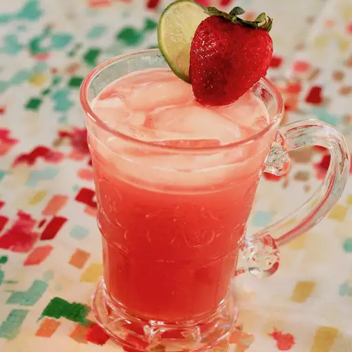

Mexican Strawberry Water

Need to quinch your thirst?
Enjoy this refreshing strawberry water all summer long
Ingredients
- 4 cups of starwberries sliced
- 1 cup white sugar
- 8 cups of cold water, divided
- 5 cups of ice for serving or as needed
- 1 lime cut into 8 wedges
- 8 fresh mint sprigs
Steps
- Mix together strawberries, sugar, and 1 cup cold water in a medium bowl.
Cover the bowl with plastic wrap and place in the refrigerator for 4 hours.
- Pour chilled strawberry mixture into a blender. Blend on high until
smooth. Pour through a wire mesh strainer set over a large bowl; discard
pulp and seeds. Stir remaining 7 cups cold water into strawberry juice until
aqua de fresca is well combined.
- Fill glasses with ice. Pour aqua de fresca over ice. Garnish each serving with
lime wedges and mint leaves.